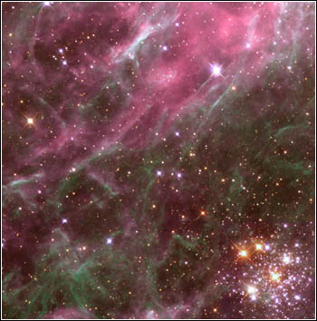

Nebula Design Contest

Originally the Nebula contests were simply design contests, but we have branched out to NPCs. The last contest was a hard core gearhead contest. There is currently no contest in progress. If you have a suggestion for one, just email me.
Contest Rules
Submissions should be sent to me by November 1st. Then I'll send it out to the list and people will have a week to vote.
The votes should be based on which is your favorite submission.
Voting will be done by the members of the TNE mailing lists.
(I guess if anyone else sends in a ballot I'll count that too.
Submissions should be sent to me in ASCII format. I can handle other formats, but
its too much work.
If you have any questions or suggestions for future contests drop me a message.
Lewis Roberts
Results from Previous Contests
First Contest to build a Wilds Trader
Second Contest to build a Vampire Hunter for
the Regency.
Third Contest to build a heavy System Defense Boat.
Fourth Contest to create a patron.
Fifth Contest to design a robot to protect the planet Promise.
Sixth Contest to create an engineer for the starship Wanderlust.
Seventh Contest to create an pilot/astrogator for the starship Wanderlust.
Eighth Contest to design a pocket empire scout ship.
Ninth Contest to design armored fighting vehicles.